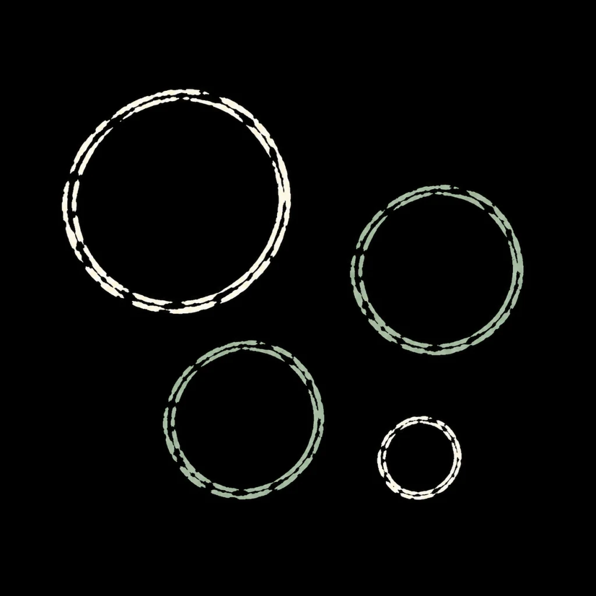
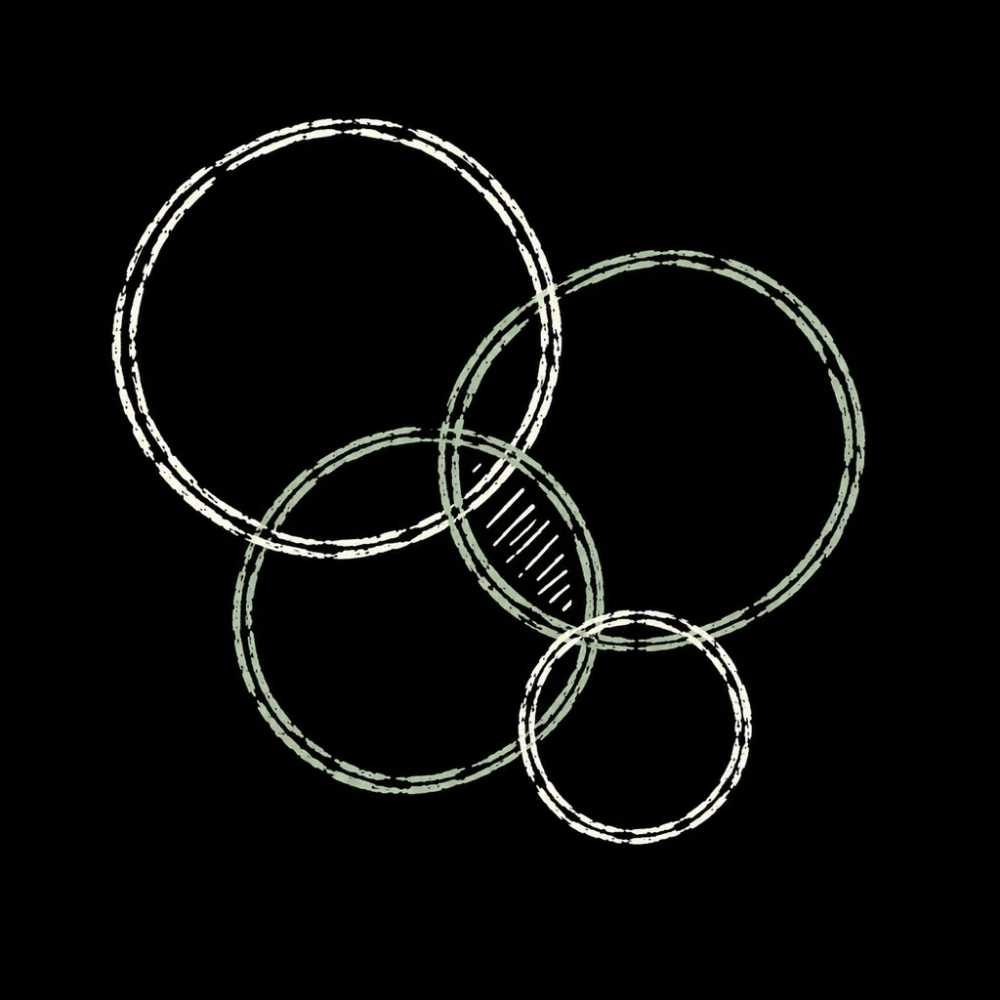
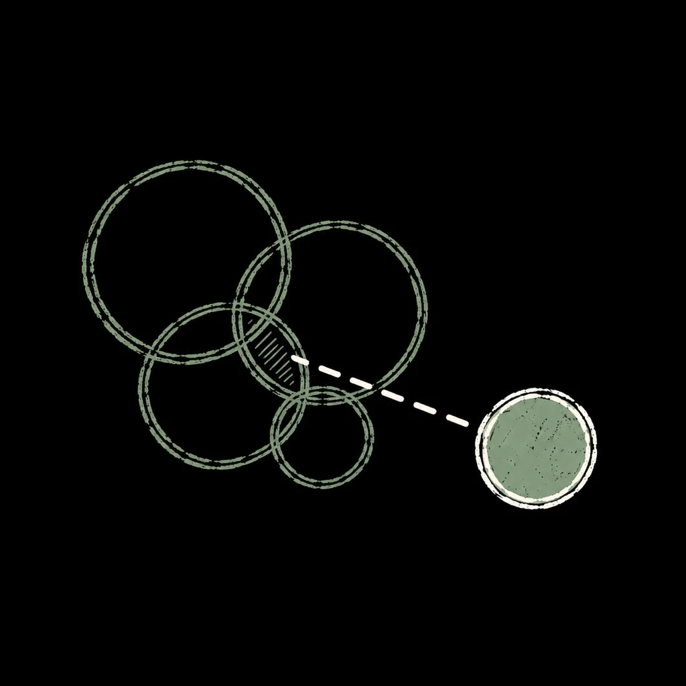
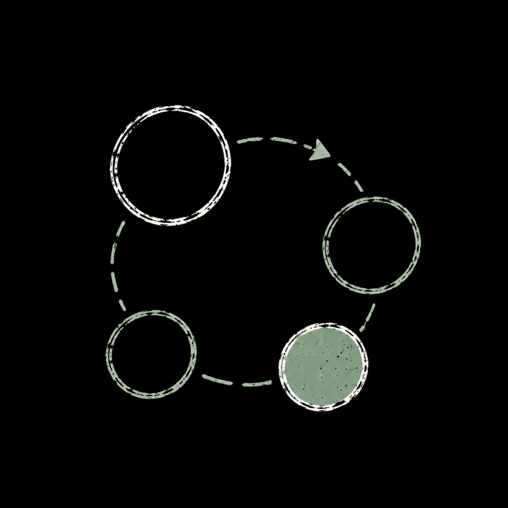

Operations & process improvement
Understand recurring problems, clarify responsibilities and improve how work moves between people.
Operations & food product development
I help owner-led businesses solve operating problems and develop food products, through defined projects and ongoing part-time support. My experience is rooted in food and manufacturing, from understanding the work to putting an agreed change into practice.
Based in Ottawa · Working across Canada
Experience in manufacturing, department building and fermentation.
Defined work · Clear ownership · Practical follow-through
What I can help with
Get an operating process working better, or move a food-product project through its next practical step. We agree what I will take on and what you will receive.
Understand recurring problems, clarify responsibilities and improve how work moves between people.
Work through a formulation or fermentation question, plan useful trials and turn the findings into a clear next step.
Need someone to carry work forward regularly? Explore ongoing part-time support
Where a tool would help, I can build practical AI and automation with clear review and ownership.
How I work
We start with what you already know. If the task is clear, we can scope the work directly. If a decision needs evidence, we agree what to investigate first.
See the approach in practice
01Look at the operating problem or product question, including what you have already tried.

02Clarify the consequence, the decision to make and what a useful result would be.

03Define the work, responsibilities, fee and completion point before starting.

04Carry out the agreed work, review the result and leave clear ownership for what comes next.
The person you work with
I built the food-ferments department at Escarpment Laboratories and spent nine years across manufacturing functions at AMBICO. I bring that operating and product experience to the work I take on with clients.
More about meA useful next step
Tell me about the problem or project, what you already know and what you want to achieve. We can work out a useful place to start.